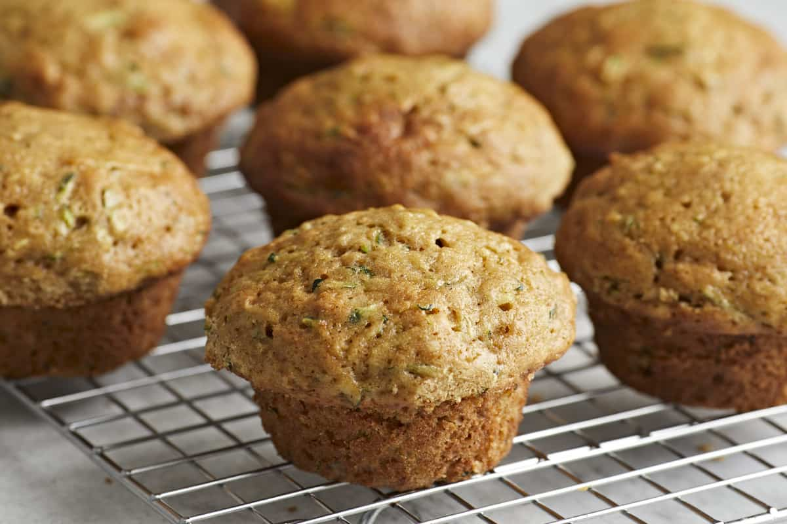
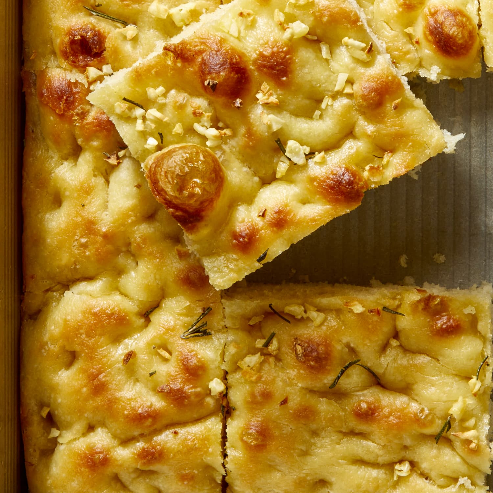
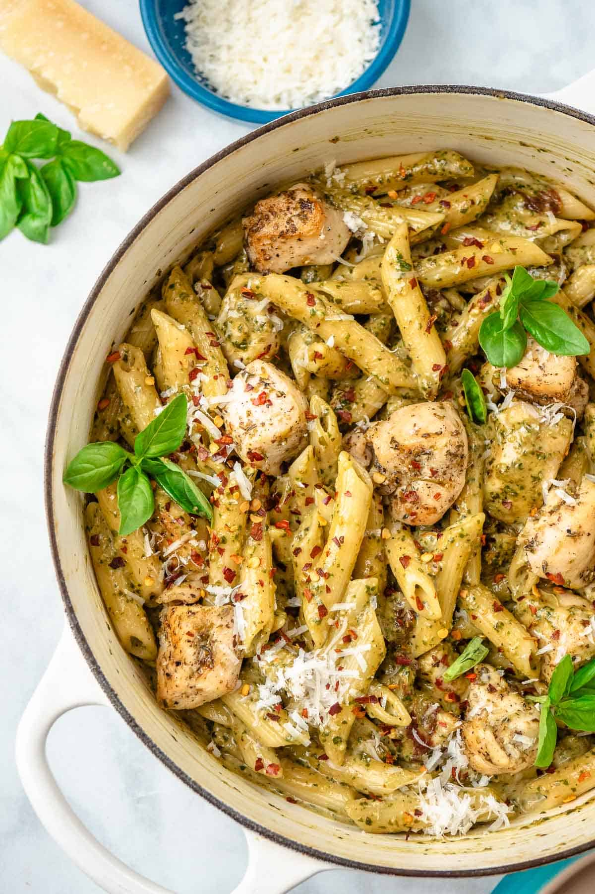

Want to add some new recipes to the collection? Look through my favorite snacks and meals below!
Note: Click on a recipe card for more details!

Zucchini Muffins
Add a new pastry to your breakfast rotation: zucchini muffins! They're sweet, moist, and secretly packed with a veggie (you can't even tell).
Time: 30 mins
Yields: 12 servings
Full Recipe for Zucchini Muffins

Focaccia Bread
This bread isn't like the others... it's actually easy to make! Put your olive oil to good use in this fluffy, buttery bread, topped with your favorite herbs.
Time: 1.5 hours
Yields: 8-12 servings
Full Recipe for Focaccia Bread

Pesto Chicken Pasta
You'll never get tired of this meal! Whether you have a jar of pesto or some fresh basil in your garden, whip up this pasta dish for a delicious Mediterranean experience.
Time: 20 mins
Yields: 6 servings
Full Recipe for Pesto Chicken Pasta